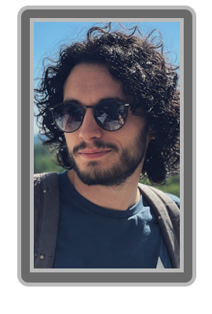

Jaque Boulon est un entrepreneur discret, principalement connu pour avoir cofondé le Jaque & Jaune Travel Group aux côtés de Jaune Pastel le 2 Novembre 2024. Dès les premiers mois, l'entreprise rencontre un succès fulgurant grâce aux visites guidées héliportées de New York, propulsant Boulon parmi les figures montantes du tourisme américain.
Sa réputation d'homme d'affaires efficace et discret lui permet de développer rapidement l'entreprise en dehors des États-Unis. Contrairement à son associé Jaune Pastel, qui incarnait le visage public de la société, Jaque Boulon a toujours préféré opérer en retrait, laissant les projecteurs à ses partenaires.
La disparition soudaine de Jaune Pastel le 18 Mai 2042 constitue un tournant dans la vie de Jaque Boulon. Son associé de toujours, avec qui il avait bâti l'entreprise depuis ses débuts, disparaît sans laisser de trace au retour d'un rendez-vous d'affaires.
Depuis cet événement, les apparitions publiques de Jaque Boulon se sont faites de plus en plus rares. La direction opérationnelle du groupe a été progressivement déléguée à des équipes de gestion, selon des proches, il aurait une obsession pour retrouver ceux qui ont fait disparaitre son ami.